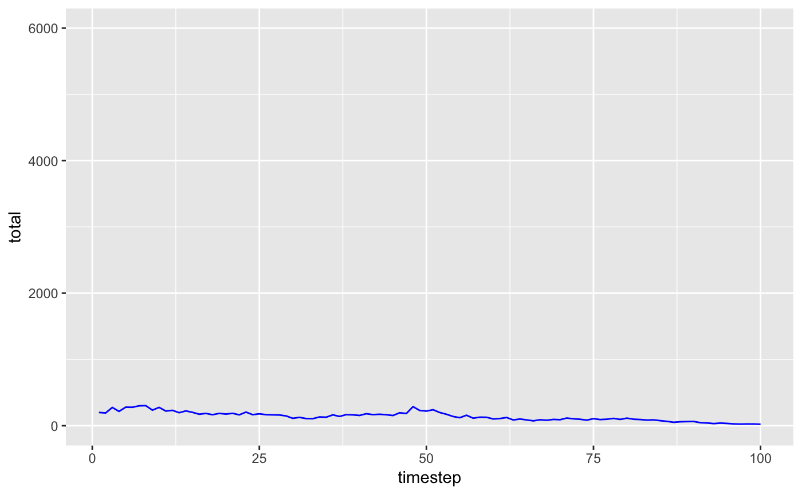
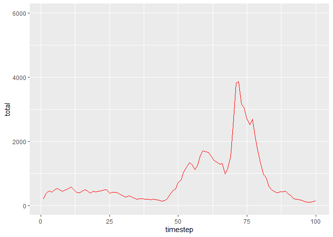

Overview
Many populations that change over time are temporally autocorrelated, which means that the random noise in each timestep is correlated to that of the previous timestep. Instead of uncorrelated white noise, these populations are governed by blue noise (negatively autocorrelated) or red noise (positively autocorrelated.)
The colorednoise package allows you to simulate colored noise as well as populations whose behavior is governed by colored noise.
Example
Here are plots of blue- and red-noise populations generated by the matrix_model function.
library(colorednoise)
set.seed(7927)
pop_blue <- matrix_model(
data = list(
mean = matrix(c(0.6687097, 0.2480645, 0.6687097, 0.4335484), ncol=2),
sd = matrix(c(0.34437133, 0.08251947, 0.34437133, 0.10898160), ncol=2),
autocorrelation = matrix(rep(-0.4, 4), ncol=2)
), timesteps = 100, initialPop = c(100, 100)
)
pop_red <- matrix_model(
data = list(
mean = matrix(c(0.6687097, 0.2480645, 0.6687097, 0.4335484), ncol=2),
sd = matrix(c(0.34437133, 0.08251947, 0.34437133, 0.10898160), ncol=2),
autocorrelation = matrix(rep(0.4, 4), ncol=2)
), timesteps = 100, initialPop = c(100, 100)
)
ggplot(pop_blue, aes(x = timestep, y = total)) + geom_line(col="blue") + ylim(0, 6000)
